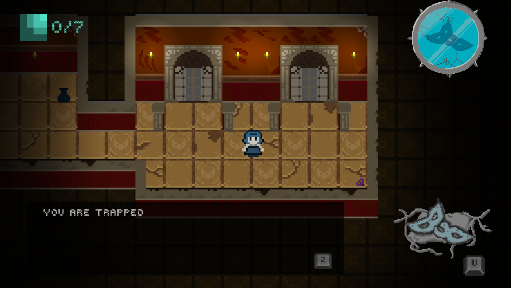
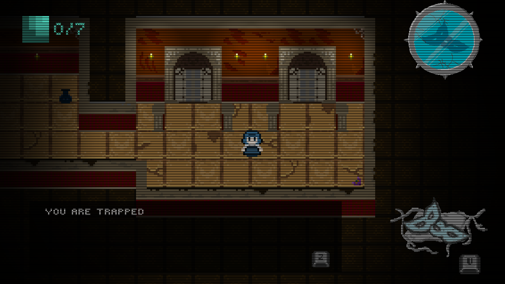

Just a Game Designer and Digital Artist.
Certified Silly Person
Just One Look
Introduction
I have participated in the Global Game Jam 2026, with the theme "Mask", and Just One Look is the game I made for the event.
I worked alongside two teammates to create this game within 3 days. Just One Look is a Pac-Man inspired strategy game, where the
player navigates through a enclosed mansion, collecting orbs in a mansion while avoiding enemies.
I am responsible for:
Programming the whole game, implementing all planned features
Technical Design, making sure the game can be feasibly completed in a short time
The game is entirely coded in Godot using the gdscript language. This is my first time creating a fully finished game
in Godot and such a short period of time.
State machines are used to control the behaviour of enemies, for which one main state script handles multiple enemy states.
Raycasting are used to detect the player, while NavigationAgent2D is used for enemy movement. Global scripts are used to
handle the game state, such as the player's insanity states as well as checkpoints.
Shaders are also used to create custom visual effects like the CRT filter, which are created using Godot's shader language
(gdshader). This involves the manipulation of the fragment shader for colour changes of the CRT filter and uv vertices for
CRT wave effects.
Without Shader

With Shader

Game Design
I am mainly in charge of the enemy mechanism for the game. Our team agreed the level should be designed with tight
spaces, therefore I decided to give enemies a large vision range. Initially, the game jam's mask theme was only
reflected in the enemy designs, which featured various masks. However I decided to intergrate this concept into the
game design as well.
Mask Enemies
Without using the mask or hiding behind walls, the first type of enemy will chase after
the player until the player is out of sight, while the second type of enemy will instantly kill the player.
Due to the duration of the jam, I reused the same concept for both enemies with variations; both enemies will ignore
the player when the player wears a mask.
Mask Enemy Variant 1
Mask Enemy Variant 2
Shadow Enemy + Insanity Mode
This enemy only appears when the player wears the mask for too long and reaches insanity mode. This enemy appears as a
dark silhouette of the player, copying the player's movement directions. This poses a huge challenge especially in tight spaces,
where the player needs to plan their movement to avoid being cornered.
In insanity mode, enemies can be killed using a knife. The mask can also no longer be taken off, making Shadow Enemies the player's
only threat.
Invoking Insanity
Shadow Enemy
Narrative Design
The scope of the game jam limits the narrative potential of the game, but a promptless branching narrative was
implemented to represent the negative effects of cultism.
Before the narrative is planned, we thought of adding an ability for the player to switch between normal and insane states.
However, by locking the player in insane state after initiating it, the social pressure of not being able to leave a cult is
shown. This shows how joining a cult can be a one-way street, and how it can be difficult to leave once you are in.
Learning Outcomes
This is the first game jam I have participated in. Even though I am familiar to Godot,
I have never made a game within such a short time frame. I learnt to compromise on the
scale of the game and focus on coding for the core gameplay mechanics. I also learnt how to collaborate with teammates through discussing goals and
understanding each other’s ideas.